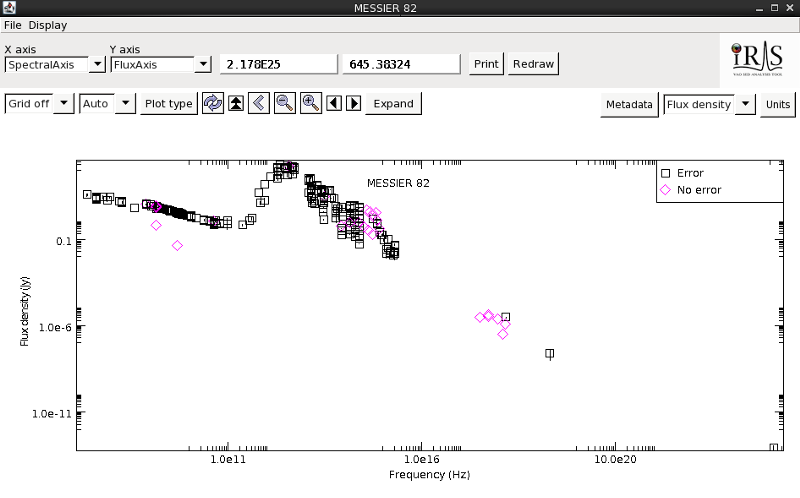
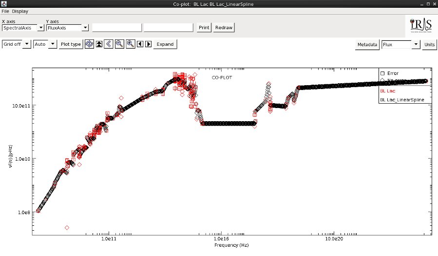
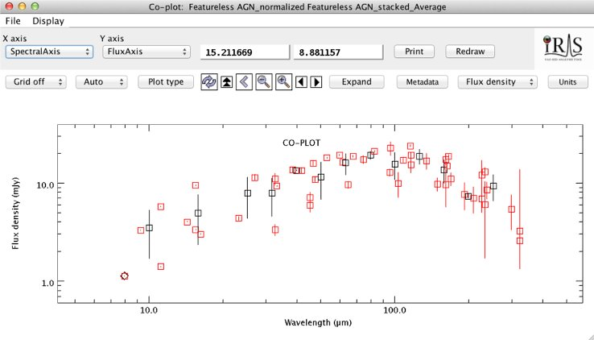

The Iris SED analysis tool allows the astronomer to access various photometric databases as an alternative to loading data from file into the application. Users can query the VO-registered NED astronomical database for SED data associated with extragalactic sources of interest. Users may also retrieve datasets for a given position and observation time range using the ASDC plugin. SED data from NED and ASDC may be directly imported into Iris via the Load File and ASDC Catalog forms, respectively:


Datasets may also be sent from other VO-enabled database applications, like TOPCAT and the MAST Portal, through SAMP (Simple Application Messaging Protocol).
The “Loading Data into Iris” section of the Iris How-to Guide provides detailed instructions on how to use these features.
| [Back to Table of Contents] |
As the Iris user interface is an adaptation of the Specview spectral visualization and analysis interface, it is equipped with several of the data display preferences offered by Specview. Most notably, one can build a wide-band SED for a source by overplotting or combining data taken with different instruments across multiple spectral bands.

The “Visualizing SED Data in Iris” section of the Iris How-to Guide describes the various options available for displaying and customizing SED data in Iris.
| [Back to Table of Contents] |
Iris allows for robust modeling and fitting of SED data through association with Sherpa, an extensible, Python-based, multi-waveband modeling and fitting application for astronomers.

Within Iris, the user is provided with an extensive list of preset emission and absorption models from which to choose for building custom model expressions for fitting, as well as a variety of fit statistics and optimization methods. There is also the option to load custom model table, template, and Python function user models.


The best-fit SED model parameter values, and confidence limits on them, returned by a fit in Iris may be saved to file. The “Modeling and Fitting SED Data” section of the Iris How-to Guide describes the features of the Iris Fitting Tool, including instructions on defining model expressions with preset or custom model components, setting initial model parameter values and ranges, choosing an appropriate fit statistic and method, and saving fit parameters.
| [Back to Table of Contents] |
As one of the primary functions of Iris is building multi-segment SEDs, it is expected that users will input multiple sets of SED data in various file formats. To address this need, the SED Builder tool within Iris is equipped to convert user SED data files in non-native formats into one of the two file formats natively supported by Iris, IVOA-compliant VOTable and FITS. Files in any of the following formats may be loaded into Iris for analysis; when a file is input in a non-native format, an extra step is required of the user in order to convert the data to a compatible format.

The SED Builder is also a robust interface for constructing and managing the various pieces of the aggregate SED. It can tie together multiple, separate SED data segments and points associated with a given source and display them together in the Iris Visualizer. The user may also maintain separate SEDs and analysis sessions within the SED Builder, whether associated with the same source or different sources. The “Building and Managing SEDs” section of the Iris How-to Guide describes the features of the SED Builder.
| [Back to Table of Contents] |
The Iris SED analysis tool includes a toolkit for SED analysis and manipulation. In order to start the toolkit click on the “Shift, Interpolate, Integrate” button on the Iris desktop.
SEDs can be shifted by using the Redshift tab in the Science Tool. Just specify the initial and final redshift and click on “Create new SED” in order to create the redshifted SED. Iris will conserve the energy of the SED, so the SED will be not only shifted but also scaled accordingly.
Users can interpolate an SED by specifiying the spectral range in which the SED must be interpolated, the interpolation algorithm, and also some other auxiliary options: whether the resulting SED should be normalized; whether a smoothing algorithm (boxcar) should be applied to the interpolated SED and the box dimension; the number of bins of the resulting SED, and the type of binning (linear or logarithmic).

Users can integrate SEDs defining passbands manually of from a searchable list of >2100 photometric filters. The resulting points can be saved to file, or be part of a new SED.
Users can statistically combine SEDs into a single, representative SED. The group of SEDs, called a “Stack,” is made up of SEDs already loaded in the SED Builder. The tool provides optional bulk redshifting and normalization of the SEDs before combination. Users combine the SEDs together using average, weighted average, or a summation of the SEDs, with linear or logarithmic binning.

More information on the science features can be found in the “Shift, Interpolate and Integrate” thread in the Iris How-To Guide.
| [Back to Table of Contents] |